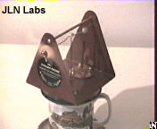
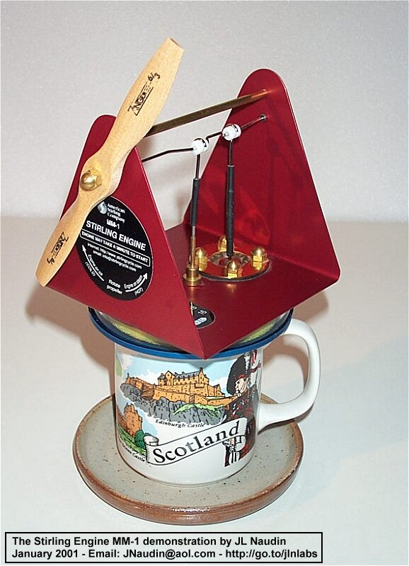
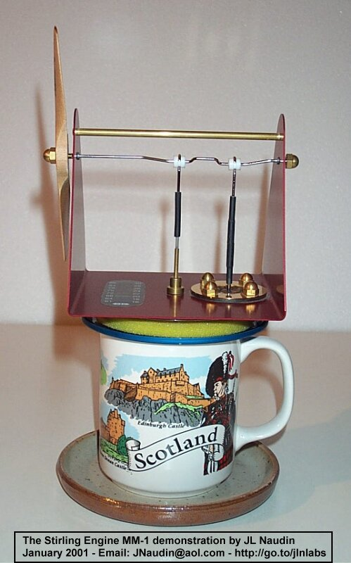

The Stirling-cycle engine has been patented in 1816 by Robert Stirling, a Scottish engineer. The Stirling-cycle engine runs on the expansion and contraction of a gas forced between separate hot and cold chambers. The resulting change in volume is then used to drive a piston, which can then be used to power external devices.
Imagine a compact, quiet power plant that delivers some kilowatts of electricity-plus hot water for heating. Let's say this power source is also virtually pollution-free, able to burn most fuels, and requires minimal maintenance.
I have purchased my own Stirling Engine model at the American Stirling Company, the model is the "Coffee Cup Stirling Engine MM-1". This model works very well and turn at a high speed on a simple coffee cup filled with water and heated in a simple microwaves oven...

When the air inside
the engine is heated it expands and pushes up on the piston.
Then when the air is cooled, it contracts and pulls down on the
piston.

See the video of the Stirling engine MM-1 inaction
Download the Video of the test ( size 989 kb )
To see this video, the free
downloadable RealPlayer is required 
Interesting links, patents and documents references :
Analysis of a recent Stirling engine patent of Dean Kamen and others
Full Power: About the New Stirling engine patents from Dean Kamen
BUILD YOURSELF YOUR OWN STIRLING ENGINE ( Full detailled diagrams ) from Steam&Engine from australia
A low temperature Stirling Engine by Penn Clower from Live Steam Magazine
The Stirling engine home page from Koichi Hirata ( Must be visited, many diagrams, plans and photos )
The Fizgig Stirling engine by Mick Collins ( with full diagrams and photos )
An Acoustic Stirling Heat engine at the Los Alamos National Laboratory